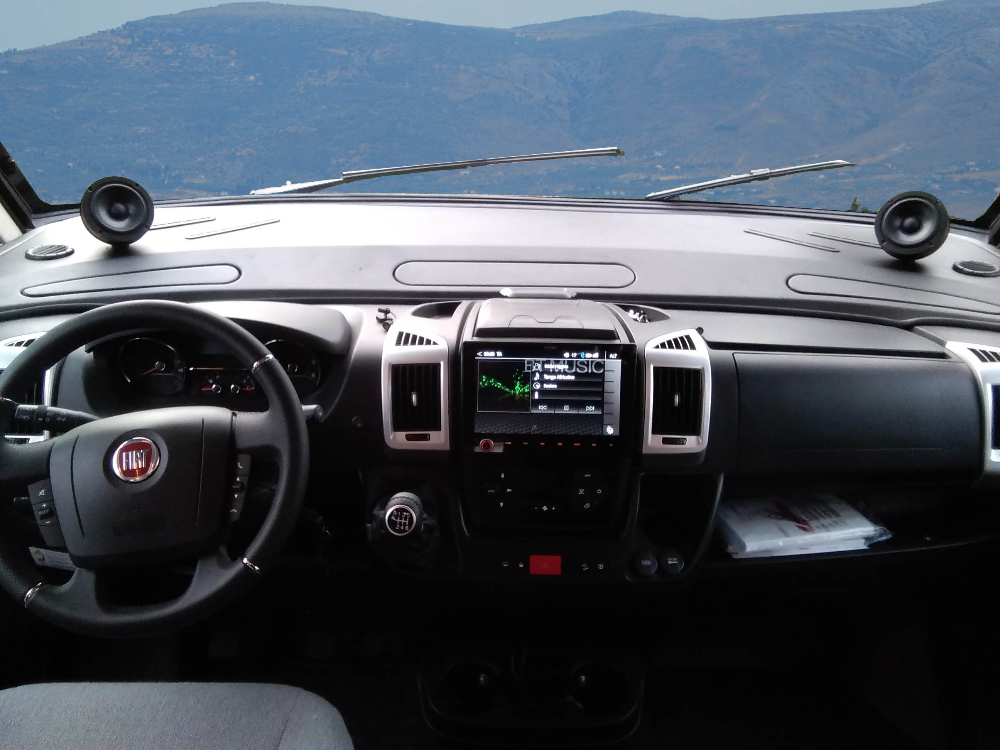
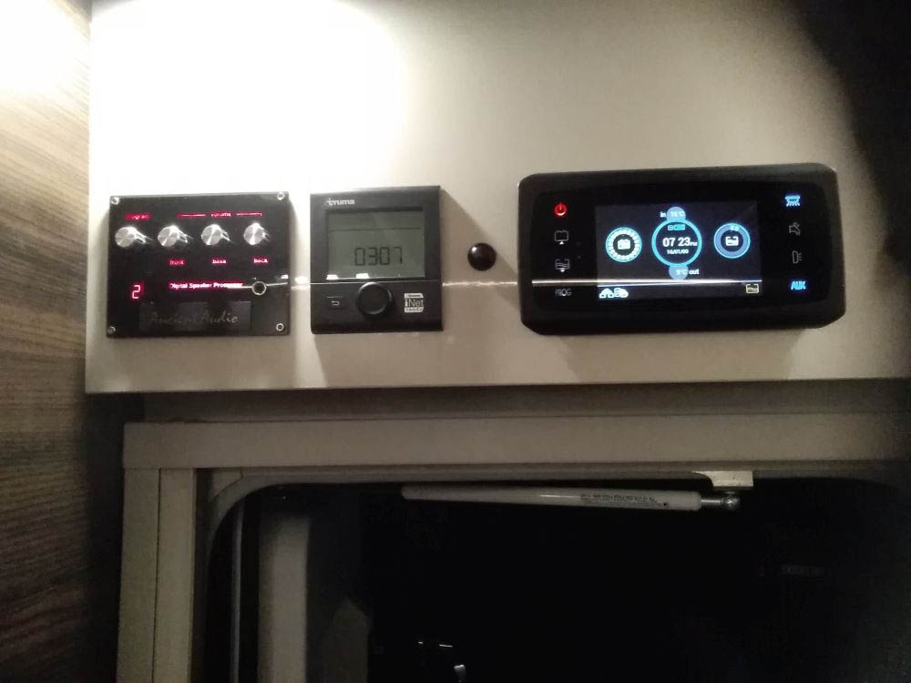

Car Audio
Talking with customers, I pointed that they are enjoy their hi-end systems maybe one hour per day, but much more time they spends in their cars, listen awful sound of standard speakers.
No matter if German, British, Japanese or Italian car..they have common feature: irritating sound of audio.
Many small or big companies tried to improve sound of car audio.
But real break was done Ancient Audio. Applying Digital Speaker Processor solved problems with sound vehicle definitelly.
Our custom audio installation can be done in any vehicle: passenger car, bus, van, truck.
The very attractive are installations in camper vans. There vehicles were created for fun...so, let enjoy fun in full range, including music. Music in drive, music at dinner, music at relax time.